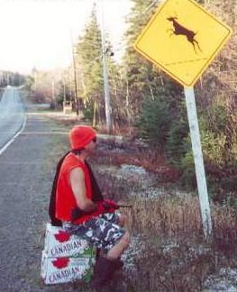

Ivan Šuka

Summary
Aspiring Web Developer, PMP® Project manager and MSc HVAC Engineer with more than 11 years of work experience, which includes 6 years gained in JP EPS –Key investment projects department – Leading and working on projects with budgets from 10 million to 700 million US dollars. Experience working with confidential documents and tight deadlines with the ability to solve problems quickly and efficiently. Communicative and organized with a positive attitude and enthusiasm, open to new challenges.
Formal Education
- Master's degree in HVAC Engineering - University of Belgrade,
Oct 2008 - Jun 2011,
Grade: 8/10
- Bachelor's degree in Mechanical Engineering - University of Belgrade,
Oct 2005 - Sept 2008,
Grade: 8/10
Work Experience
-
Project Manager - Electric Power Industry of Serbia
March 2020 - Present
- Analysis of the project requirements, Schedule, Costs and Scope Management
- Communication, Resource and Documentation Management (letters, meetings, emails, codes,
archiving etc.)
- Feasibility Study, Basic design, Detail design, Study of environmental impact, Health and safety
preventive measures plan
- Procurement of technology (know how) with necessary licenses and experts with appropriate
certificates as well as construction services
- Regular reporting to the supervisory board on the project
- Quality and Risk Management
Skills
- Agile Project Management: ⭐️⭐️⭐️⭐️⭐️
- Microsoft Office: ⭐️⭐️⭐️
- Organizational skills: ⭐️⭐️⭐️⭐️
Certifications
- ISO 9001 Lead Auditor
- PMP Project Management Professional
- Health and Safety Coordinator for Construction Projects
Other
Hobbies
Contact Me